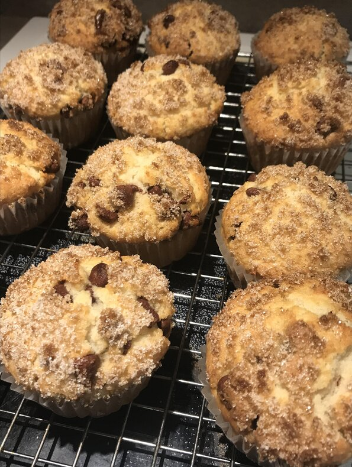

Chocolate Chip Muffins

Description
Ingredients
- 2 cups all-purpose flour
- 1/2 cup white sugar
- 3 teaspoons baking powder
- 1/2 teaspoon salt
- 3/4 cup milk
- 1/3 cup vegetable oil
- 1 egg
- 3/4 cup mini semi-sweet chocolate chips
- 3 tablespoons white sugar
- 2 tablespoons brown sugar
Steps
- Heat oven to 400 degrees F (205 degrees C). Grease bottoms only of 12 muffin cups or line with baking cups.
- In a medium bowl, combine flour, 1/2 cup sugar, baking powder, chocolate chips, and salt; mix well. In a small bowl, combine milk, oil and egg; blend well. Add dry ingredients all at once; stir just until dry ingredients are moistened (batter will be lumpy.)
- Fill cups 2/3 full. Sprinkle tops of muffins before baking with a combination of 3 tablespoons sugar and 2 tablespoon brown sugar.
- Bake for 20 to 25 minutes or until toothpick inserted in center comes out clean. Cool 1 minute before removing from pan. Serve warm.